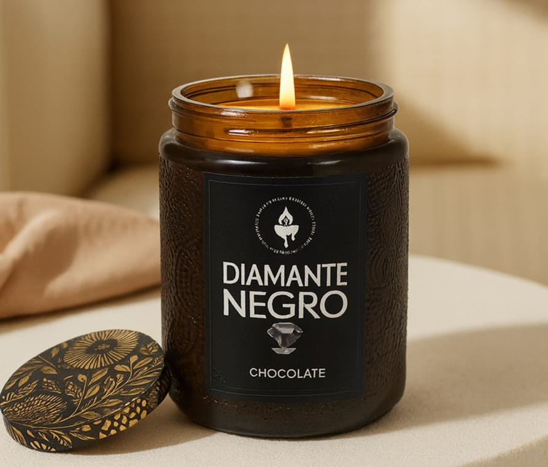
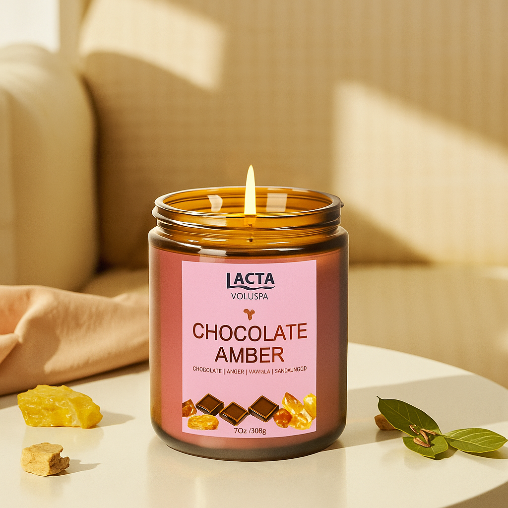

Nossa Coleção

Chocolate / Diamante Negro
Relaxamento profundo com notas de chocolate
R$ 39,90

Ouro Branco
Energia revigorante com toques doces
R$ 42,90

Morango
Perfume leve e sensação de spa em casa
R$ 34,90
Serviços
Trabalhamos com velas aromáticas artesanais, desde a criação até a produção completa. Oferecemos personalização de fragrâncias, design de embalagens e consultoria para marcas que desejam lançar suas próprias linhas de velas.
Quem Somos
A Lacta & Voluspa nasceu da paixão por bem-estar e aromas únicos. Unimos o cuidado artesanal com a pureza dos óleos essenciais para criar experiências sensoriais que acolhem, inspiram e transformam o ambiente.